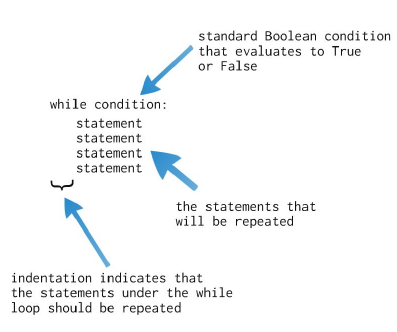
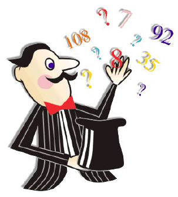

class: center, middle # While Loops ## or condition controlled repetition .author[ CORE-UA 109.01, Joanna Klukowska <br> adapted from slides for CSCI-UA.002 by D. Engle, C. Kapp and J. Versoza ] --- # let's start with an example Write a program that prints numbers from 0 to 9, each on a new line. -- .left-column2[ use a `for` loop ```python for i in range(0,10,1): print(i) ``` ] -- .right-column2[ use a `while` loop ```python i = 0 while i < 10: print(i) i = i + 1 ``` ] -- .below-column2[ - which of the two programs do you prefer? - you can use either of the loops to accomplish the counting here - the `for` loop handles the setting up of initial value of the counter variable `i` and increments `i` in each iteration (by setting its value to the next element in the iterable returned by the `range()` function - in the `while` loop we need to initialize the value of `i` before the loop and we need to increment the value of `i` inside the loop ] --- # another example Write a program that prompts the user for a sequence of numbers and adds them all up. The program should continue until the user enters zero. -- use a `for` loop ```python ??? ??? ``` -- use a `while` loop ```python sum = 0 number = -1 while number != 0: number = float(input("Enter your next value: ")) sum = sum + number print ("The sum of your numbers is", sum) ``` -- - in some cases, one loop works much more naturally than the other - how do we decide which to use? - if you can tell up front how many times the loop should repeat, use the `for` loop - if the number of repetitions depends on some condition unknown at the time of writing the program, use the `while` loop --- class: center, middle .section[ # `while` loop statement ] --- # syntax .center[  ] --- # how `while` works .left-column2-small[ ```python while condition: body of the loop code after the loop ``` ] .right-column2-large[ - a __condition controlled loop__ is programming structure that causes a statement or set of statements to repeat as long as a condition evaluates to `True` - `while` loops work as follows: - evaluate the condition - if it is `False`, skip the body of the loop and continue with the code after the loop - if it is `True`, execute the body of the loop - re-evaluate the condition - if it is `False`, skip the body of the loop and continue with the code after the loop - if it is `True`, execute the body of the loop - re-evaluate the condition - ... ] --- # warning! - when working with a `while` loop there is nothing to prevent you from writing a Boolean condition that will never evaluate to False - we call this an __infinite loop__ since it never stops executing - if this happens your loop will continue executing forever, or until you send an `interrupt` signal to Python using the CTRL-C key combination - with the exception of a few special cases you want to try and avoid writing infinite loops (figure out what the condition should be that terminates it instead) -- example: what is the output of this program ```python a = 5 while a < 10 : print('A is less than 10`) ``` --- # infinite loops: an artistic view - M.C. Escher (1898-1972) was a Dutch graphic artist who used mathematical concepts of infinite in some of his drawings. (http://en.wikipedia.org/wiki/M._C._Escher) - Here is one vision of an infinite loop: .center[ <img src="img/DrawingHands.jpg" width=60% alt="drawing hands"> ] --- class: center, middle .section[ # `while` loop in action ] --- # trace the output .left-column2[ ```python num = 1 while num < 1000 : print (num) num = num * 2 ``` ```python num = 100 while num > 0 : print (num ) num = num - 5 ``` ```python num = 1 sum = 0 while num <= 10 : sum = sum + num num = num +1 print ( sum ) ``` ```python num = 1 sum = 0 while num <= 10 : num = num +1 sum = sum + num print ( sum ) ``` ] .right-column2[ ```python num = 1 sum_odd = 0 sum_even = 0 while num <= 10 : if num % 2 == 0 : sum_even = sum_even + num else : sum_odd = sum_odd + num num = num +1 print ( sum ) ``` ] --- # trace the output ```python m1 = 101 m2 = -1 sum = 0 count = 0 print ( "Enter numbers from 1 to 100.") print ( "Enter 0 to indicate your last number.") num = -1 while num != 0 : num = int ( input("next: " ) ) if ( num < 1 or num > 100 ) : print ("not a valid value") else : sum = sum + num count = count + 1 if num < m1 : m1 = num if num > m2 : m2 = num print ( "sum:", sum ) print ( " m1:", m1 ) print ( " m2:", m2 ) print ( "ave:", sum / count ) ``` -- - add comments - change the names of m1 and m2 variables so that they are more representative - can you think of a problem that may occur when running this program? --- # AI in a "guess a number" game .left-column2-small[ .center[  ] ] .right-column2-large[ Write a program that asks the user to "think of" a secret number between 1 and 1,000,000. (The user is a very honest person and once they set on a number they will not change it.) The program should then attempt to guess the user's number. Keep track of the number of attempts. What do you think is the largest number of attempts that the computer has to make? ] --- class: center, middle .section[ # input validation <br>and re-prompting ] --- # simple data validation - often we need to ask the user to supply a value in our programs, but the users don't always follow directions - one strategy you can use to ensure that you get "good" data is to "validate" the user's input - ask the user for a value - if it meets our criteria we can continue - if not we will need to ask the user to re-supply the value (this brings us back to the first bullet) -- - __attempt one: use an `if` statement__ ```python num = int(input ("enter a number between 0 and 100 (inclusive):")) if num < 0 or num > 100 : print ("invalid value") ``` -- works for validation, not for re-prompting --- # simple data validation - often we need to ask the user to supply a value in our programs, but the users don't always follow directions - one strategy you can use to ensure that you get "good" data is to "validate" the user's input - ask the user for a value - if it meets our criteria we can continue - if not we will need to ask the user to re-supply the value (this brings us back to the first bullet) -- - __attempt two: use a `while` loop__ ```python num = int(input ("enter a number between 0 and 100 (inclusive):")) while num < 0 or num > 100 : num = int(input("invalid value, try again: ") ) ``` -- works for validation AND re-prompting --- class: center, middle .section[ # programming challenges ] --- # temperature conversion - write a program that allows the user to convert a temperature in Fahrenheit into Celsius using the following formula Celsius = 5/9 * (Fahrenheit - 32) - after calculating the temperature ask the user if they wish to continue. If so, repeat the conversion with a new number. Otherwise end the program --- # average grade Write a program that asks the user to continually enter in the following information for a group of students who just completed their first exam: - name - grade received To indicate the end of the list, the user will enter "none" for the name and "-1" for the grade. Calculate the following information based on the data: - number of students who took the exam - average grade on the exam - lowest grade on the exam - the name of the student who received the lowest grade - highest grade on the exam - the name of the student who received the highest grade --- # find the syntax errors This code has several syntax errors. Can you find them on your own? ```python m1 = 101 m2 = -1 sum = 0 count = 0 print ( "Enter numbers from 1 to 100." print ( "Enter 0 to indicate your last number.") num = -1 while num != 0 : num = int ( input("next: " ) if num < 1 or num > 100 : print ("not a valid value") else : sum = sum + num count = count + 1 if num < m1 : m1 = num if num > m2 m2 = num print ( "sum:", sum ) print ( " m1:", m1 ) print ( " m2:", m2 ) print ( "ave:", sume / count ) ```